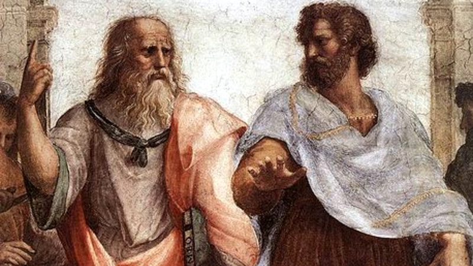
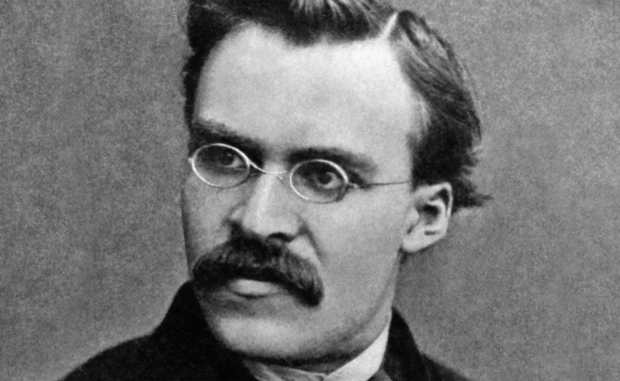

QUAL É O SENTIDO DA VIDA?
Bruno Yuuki Hayashi
A CORRENTE DO ESSENCIALISMO: Platão e Aristóteles

Resume-se o Essencialismo a uma corrente de pensamento de que tudo possui uma essência, propriedades necessárias que compõem algo, por exemplo uma faca: sua essência seria a lâmina, visto que a alteração de seu cabo, seja para formato ou material, o produto ainda será uma faca; agora, se mudas a lâmina da faca, ela passa a ser denominada outro objeto cortante, um machado, adaga, facão, que seja. E não seria diferente com o homem, o mesmo teria vindo ao mundo com um propósito já definido, esta, sua essência. Os filósofos essencialistas definem esse propósito, a sua razão de ser.
NiIETZSCHE E A OPOSIÇÃO AO ESSENCIALISMO

Friedrich Nietzsche desenvolveu no Niilismo, uma ideia oposta ao essencialismo, em que a existência do indivíduo não possui significado. Seria ele, a desconfiança e descrença de todas as crenças existentes, um vazio que antes era preenchido pela religião por exemplo, com o passar do tempo entendeu-se haver uma explicação científica para sua causa, logo, se antes a crença, agora refutada, implicava em um sentido para a existência de alguma criatura, essa perderia esse sentido e sofreria. Ambas as correntes posteriormente, serviriam para o desenvolvimento do existencialismo.